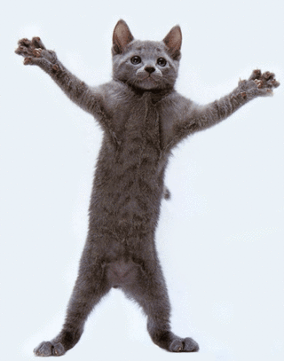

Teoria:
a)Uwagi na temat JS
-kiedy powstała
1995 rok
-dlaczego jest to język skryptowy
ponieważ nie musi zostać skompilowany do kodu maszynowego, aby można było zobaczyć efekty jego działania.
-gdzie jest wykonywany JS (klient lub serwer)
po stronie klienta
-dlaczego jest to bezpieczne narzędzie
ponieważ ma znacznie ograniczone
uprawnienia dostępu do zasobów komputera, przy użyciu którego przeglądana jest dana strona, a
wszelkie odwołania do funkcji i obiektów wykonywane są w trakcie wykonywania programu.
-czy jest to język obiektowy , jeśli tak to dlaczego.
jest językiem obiektowym poineważ opisuje obiekty i ich właściwości
b)Przepisz linie kody pod nimi wytłumaczenie:
&lsaquoinput type="button" name="przycisk" value="Nowa Strona" onclick="WinOpen(' ')"&rsaquo
przycisk o nazwie "przycisk" z zawartością "nowa strona", który przy wciśnięciu wywołuje funkcję WinOpen().
window.open("obraz.html","okienko","toolbar=no,directories=no,menubar=no,height=280,width=160,top=200,left=200");
otwiera w nowym oknie plik obraz.html nazywa nowe okno okienko, bez przycisków katalogów paska adresowego i menu przeglądarki.
ustawia wysokość okna na 280 i szerokość na 160 oraz ustawia go 200 jednostek od góry ekranu i 200 jednostek od lewej strony ekranu.
toolbar=no ukrywa przyciski katalogów
directories=no ukrywa pasek adresowy
menubar=no ukrywa menu przeglądarki
height=280 ustawia wysokość okna na 280
width=160 ustawia szerokość okna na 160
top=200 ustawia położenie okna względem góry ekranu na 200
left=200 ustawia położenie okna względem lewej strony ekranu na 200
